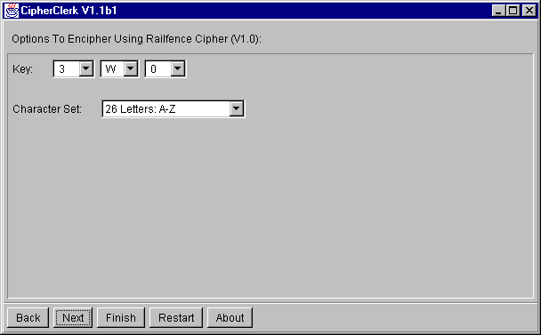

Railfence and Redfence Cipher
Railfence Cipher
The text is written along a W or M style route and then read line by line.
For example, MESSAGE may be written as
and therefore enciphered as MAESG SE.
This cipher doesn't use a key word. Instead the key consists
of two numbers separated by W or M. The first number denotes the number
of lines to use, the second denotes how many places in the route shall
be omitted before the first letter of the message. The letters W and M
depict the start of the route. Thus the example given above used the key
3W0.

Redfence Cipher
This cipher prepares the plain text in the same way as the rail fence cipher,
but the lines are not read top-down. Instead a numeric key is derived from
a key word and the lines are read according to this numeric key: The key
word AND yields the numeric key 1-3-2, so that the example
given above results in MASEE SG. The number of lines equals the
length of the key, the other parameters are fixed to W0.
To proceed, you may